La loi, rien que la loi
Chaque règle cite ses articles du code de la route (arrêté royal du 1er décembre 1975). Le texte officiel est à un toucher, mot pour mot.
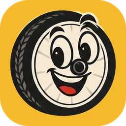
Right Lane TéléchargerWallonie · Code de la route
Est-ce que je dois prendre la piste ? Puis-je rouler à deux ? Et ce panneau, il veut dire quoi ? Right Lane te répond en une phrase, avec un schéma et le texte officiel.
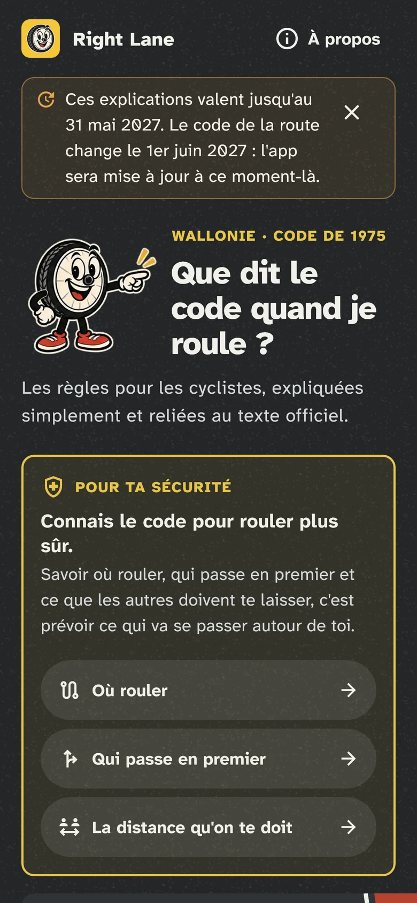
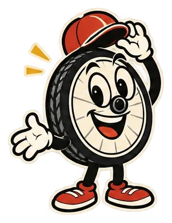
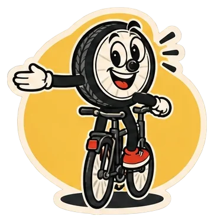
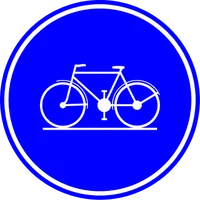
Petit test
Cinq situations de tous les jours. Les réponses viennent de l'app, et de la loi.
Au feu rouge, je peux me placer devant les voitures, dans le sas vélo.
Au feu rouge, tu peux te placer devant les voitures.
Règle « Le sas vélo aux feux »
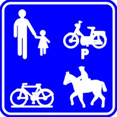
Un chemin réservé avec ce panneau, c'est une piste cyclable.
Ce n'est pas une piste cyclable. Vitesse maximale : 30 km/h.
Règle « Chemin réservé (F99) : quelles règles ? »
Sur la chaussée, on peut rouler à deux de front.
Oui sur la chaussée, sauf quand on ne peut pas se croiser.
Règle « Puis-je rouler à deux de front ? »
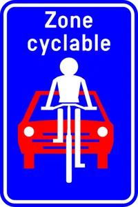
Dans une zone cyclable, une voiture peut me dépasser si elle roule doucement.
Les voitures peuvent y entrer, mais pas te dépasser. 30 km/h maximum.
Règle « Zone cyclable : quelles règles ? »
En agglomération, une voiture qui me dépasse lentement peut passer tout près de moi.
Au moins 1 mètre. Hors agglomération, au moins 1,5 mètre.
Règle « Quelle distance une voiture doit-elle garder avec moi ? »
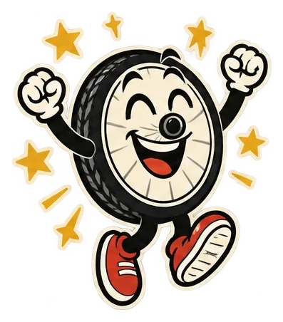
Il y a 100 règles et conseils comme ça dans l'app, chacun sur son écran.
Je veux l'appDans l'app
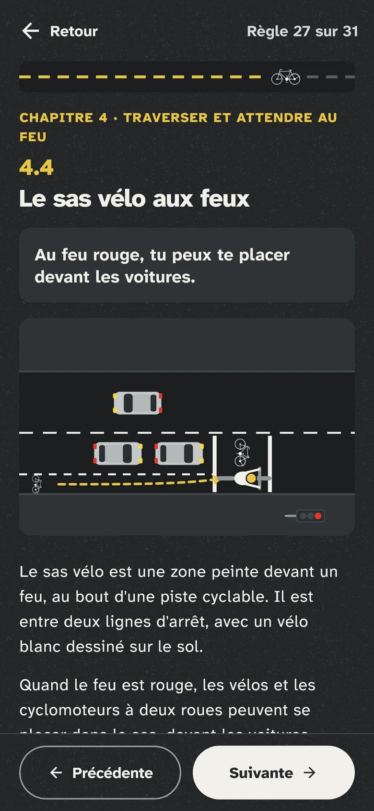
Chaque règle tient sur un écran. La réponse courte est en haut, en gros. Le détail vient après, si tu veux.
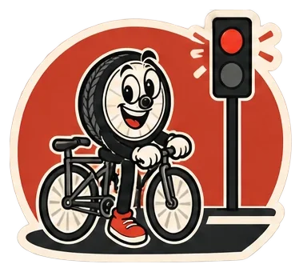
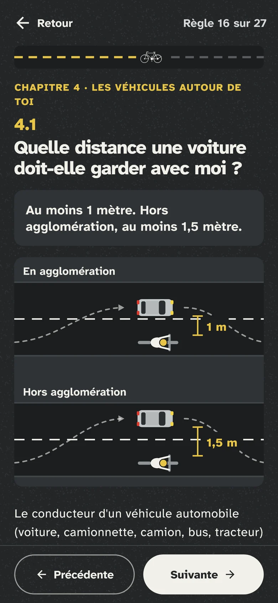
Toi en jaune, les autres en gris. En un coup d'œil, tu vois qui passe, où te placer et quelle distance garder.
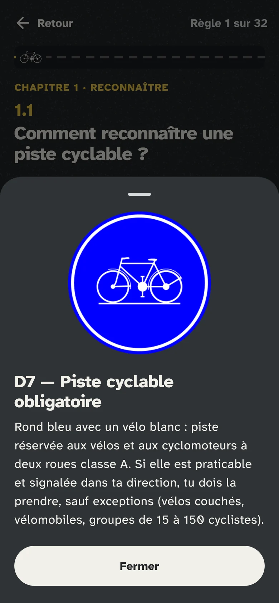
Un code comme D7 dans le texte ? Touche-le : le vrai panneau s'affiche en grand, avec ce qu'il veut dire.
Chaque règle cite ses articles du code de la route (arrêté royal du 1er décembre 1975). Le texte officiel est à un toucher, mot pour mot.
Ce qui n'est pas dans la loi mais te protège vient à part, avec sa source (Vias, Sécurothèque). Jamais présenté comme une obligation.
4 fiches, 100 règles et conseils
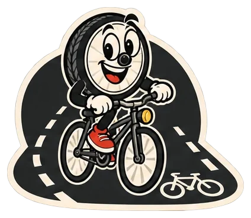
Les reconnaître, quand tu dois les prendre, quand tu peux les quitter.
31 règles · 4 chapitres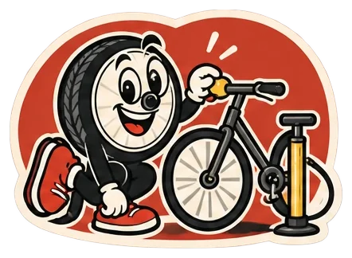
Freins, sonnette, lumières, téléphone et écouteurs : ce qui est obligatoire.
19 règles · 4 chapitres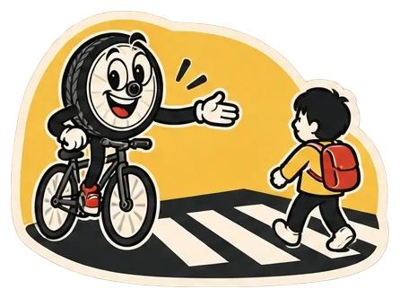
Tendre le bras, les piétons, rouler à plusieurs, les bus et la vitesse.
26 règles · 6 chapitresPriorités, feux, sens interdits, zones : ce que chaque panneau te demande.
24 règles · 6 chapitres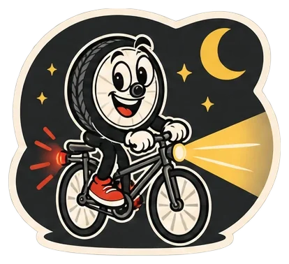
Right Lane est une aide pour apprendre, pas un avis juridique. En cas de doute, c'est le texte publié au Moniteur belge qui compte.
Le code de la route change le 1er juin 2027. L'app sera mise à jour à ce moment-là.
Right Lane, le code de la route expliqué aux cyclistes.